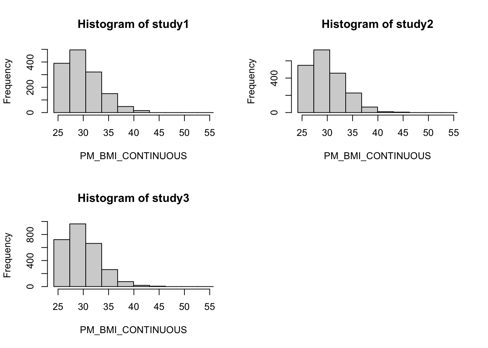

install.packages("devtools")
library(devtools)
devtools::session_info()DataSHIELD Workshop
INFORMATION FOR NEWCOMERS TO RSTUDIO NOTEBOOKS:
This is an R Markdown Notebook. When you execute code within the notebook, the results appear beneath the code. Here you can download the .Rmd file to reproduce this bookdown using RStudio (in case the download does not work, right click on the link and select “Save link as…”). You can also copy and paste the R code available in every step.
Try executing each chunk by clicking the Run button within the chunk or by placing your cursor inside it and pressing Ctrl+Shift+Enter.
The plan for this lesson is as follows:
- Installing DataSHIELD
- Logging in and assigning data
- Describing data
- Manipulating data
- Subsetting data
- Data manipulation with dsHelper
- Making graphs
- Performing regression analysis
Installing DataSHIELD
Firstly: check whether we have the right R packages installed to run DataSHIELD: using the very helpful devtools package, we’ll use the “Session info” command:
We are missing some of the necessary packages: “DSI”, “DSOpal” and “dsBaseClient”.
install.packages('DSI')
install.packages('DSOpal')
install.packages('dsBaseClient', repos='http://cran.obiba.org', type='source', dependencies=TRUE)
install.packages('metafor')
devtools::install_github('lifecycle-project/ds-helper')Remember to load them into this R session using “library()” command:
library(DSI)
library(DSOpal)
library(dsBaseClient)
library(dsHelper)
library(metafor)Check that they have now been added:
devtools::session_info()Logging in and assigning data
The login script has to be customized to fit the data you are trying to connect to.
The “builder <-” and “builder$append” functions are standard features.
For this demonstration we are connecting to simulated data- but if it was data of real people, it would be very important for us not to be able to see individual patients’ information.
Let’s log in to the Opal online portal to see what data is available.
We will use the simulated dataset CNSIM, in a data.frame with 4128 observations of 11 harmonized variables. The CNSIM dataset contains synthetic data based on a model derived from the participants of the 1958 Birth Cohort, as part of the obesity methodological development project. This dataset does contain some NA values.
For the ease of this workshop, we’ll imagine that each study is hosted by a different partner of DataSHIELD: the first by UMCG Groningen (where EUCAN-Connect is based), the second by Liverpool University (where DataSHIELD core team is based) and the third by Barcelona (where ISGlobal is based). The below code creates a local R object with the login details for each study:
builder <- DSI::newDSLoginBuilder()
builder$append(server = "study1", url = "https://opal-demo.obiba.org", user = "dsuser", password = "P@ssw0rd", table = "CNSIM.CNSIM1", driver = "OpalDriver", options='list(ssl_verifyhost=0, ssl_verifypeer=0)')
builder$append(server = "study2", url = "https://opal-demo.obiba.org", user = "dsuser", password = "P@ssw0rd", table = "CNSIM.CNSIM2", driver = "OpalDriver", options='list(ssl_verifyhost=0, ssl_verifypeer=0)')
builder$append(server = "study3", url = "https://opal-demo.obiba.org", user = "dsuser", password = "P@ssw0rd", table = "CNSIM.CNSIM3", driver = "OpalDriver", options='list(ssl_verifyhost=0, ssl_verifypeer=0)')
logindata <- builder$build()The error message displayed here- in production, would use https. But no need here (a self-contained environment, no risks).
Now we need to connect, referring to the login information in the data frame we have just created:
connections <- DSI::datashield.login(logins = logindata, assign = TRUE, symbol = "D")The ‘assign’ argument can be set to either ‘TRUE’ or ‘FALSE’. If set to ‘TRUE’, all the available variables within that table will be assigned to a serverside data frame and available to access. If you only need a small subset of available variables it can be preferable to set this to ‘FALSE’ and later use the function ‘datashield.assign’ to separately assign only the variables you need. The output of this box has useful progress bars which show the progress of connecting to studies, one by one.
We can see the serverside object that has been created by running:
ds.ls()$study1
$study1$environment.searched
[1] "R_GlobalEnv"
$study1$objects.found
[1] "D"
$study2
$study2$environment.searched
[1] "R_GlobalEnv"
$study2$objects.found
[1] "D"
$study3
$study3$environment.searched
[1] "R_GlobalEnv"
$study3$objects.found
[1] "D"Here you see one dataframe in each study called ‘D’ (this name was set using the ‘symbol’ argument in datashield.login above).
Describing data (‘aggregate-type functions’)
First use the Opal web portal to explore the metadata of ega_phenotypes.
Go to the url: https://opal-demo.obiba.org/ui/index.html#!project;name=CNSIM;tab=TABLES
And log in using the basic analyst’s user-password combination: user / password (your browser may warn you about insecurity but again, this is not important as it is only on the local network).
Here you will be able to check on the metadata of what you are studying, to get ideas about what commands you may want to run on which variable.
There are many data exploration functions already implemented into DataSHIELD: let’s check it out at the wiki https://data2knowledge.atlassian.net/wiki/spaces/DSDEV/pages/1184825438/List+of+all+DataSHIELD+functions+v6.1
Scroll down to “Data structure queries”. Let’s try out a few of these:
ds.dim(x="D", datasources= connections)$`dimensions of D in study1`
[1] 2163 11
$`dimensions of D in study2`
[1] 3088 11
$`dimensions of D in study3`
[1] 4128 11
$`dimensions of D in combined studies`
[1] 9379 11ds.colnames(x="D", datasources= connections)$study1
[1] "LAB_TSC" "LAB_TRIG" "LAB_HDL"
[4] "LAB_GLUC_ADJUSTED" "PM_BMI_CONTINUOUS" "DIS_CVA"
[7] "MEDI_LPD" "DIS_DIAB" "DIS_AMI"
[10] "GENDER" "PM_BMI_CATEGORICAL"
$study2
[1] "LAB_TSC" "LAB_TRIG" "LAB_HDL"
[4] "LAB_GLUC_ADJUSTED" "PM_BMI_CONTINUOUS" "DIS_CVA"
[7] "MEDI_LPD" "DIS_DIAB" "DIS_AMI"
[10] "GENDER" "PM_BMI_CATEGORICAL"
$study3
[1] "LAB_TSC" "LAB_TRIG" "LAB_HDL"
[4] "LAB_GLUC_ADJUSTED" "PM_BMI_CONTINUOUS" "DIS_CVA"
[7] "MEDI_LPD" "DIS_DIAB" "DIS_AMI"
[10] "GENDER" "PM_BMI_CATEGORICAL"We’re going to be focus on hdl_cholesterol.
This is a measure of HDL Cholesterol (aka the “good cholesterol” level)
Let’s run some summary statistic commands
ds.class(x='D$LAB_HDL', datasources = connections)$study1
[1] "numeric"
$study2
[1] "numeric"
$study3
[1] "numeric"ds.length(x='D$LAB_HDL', datasources = connections)$`length of D$LAB_HDL in study1`
[1] 2163
$`length of D$LAB_HDL in study2`
[1] 3088
$`length of D$LAB_HDL in study3`
[1] 4128
$`total length of D$LAB_HDL in all studies combined`
[1] 9379ds.mean(x='D$LAB_HDL', datasources = connections)$Mean.by.Study
EstimatedMean Nmissing Nvalid Ntotal
study1 1.569416 360 1803 2163
study2 1.556648 555 2533 3088
study3 1.574687 655 3473 4128
$Nstudies
[1] 3
$ValidityMessage
ValidityMessage
study1 "VALID ANALYSIS"
study2 "VALID ANALYSIS"
study3 "VALID ANALYSIS"What is this other function to obtain the mean? Let’s use the DataSHIELD function help documentation.
?ds.quantileMeanNow, putting into action some of what we’ve learned about the function arguments.
ds.quantileMean(x='D$LAB_HDL', datasources = connections) 5% 10% 25% 50% 75% 90% 95% Mean
0.8678198 1.0388227 1.2998328 1.5787193 1.8481549 2.0896969 2.2302836 1.5676188 ds.quantileMean(x='D$LAB_HDL',type = "split", datasources = connections)$study1
5% 10% 25% 50% 75% 90% 95% Mean
0.875240 1.047400 1.300000 1.581000 1.844500 2.090000 2.210900 1.569416
$study2
5% 10% 25% 50% 75% 90% 95% Mean
0.850280 1.032200 1.294000 1.563000 1.840000 2.077000 2.225000 1.556648
$study3
5% 10% 25% 50% 75% 90% 95% Mean
0.876760 1.039200 1.304000 1.589000 1.856000 2.098800 2.244200 1.574687 Trying to calculate the variance of HDL Cholesterol:
?ds.vards.var(x = "D$LAB_HDL", type = "split", datasources = connections)$Variance.by.Study
EstimatedVar Nmissing Nvalid Ntotal
study1 0.1707959 360 1803 2163
study2 0.1786661 555 2533 3088
study3 0.1785256 655 3473 4128
$Nstudies
[1] 3
$ValidityMessage
ValidityMessage
study1 "VALID ANALYSIS"
study2 "VALID ANALYSIS"
study3 "VALID ANALYSIS"Can we store the results calculated from a DataSHIELD analysis in a local R session?
Yes- the output of aggregate functions are always R objects, hence can be stored.
a<-ds.var(x = "D$LAB_HDL", type = "split", datasources = connections)[[1]]
a EstimatedVar Nmissing Nvalid Ntotal
study1 0.1707959 360 1803 2163
study2 0.1786661 555 2533 3088
study3 0.1785256 655 3473 4128b<-ds.var(x = "D$LAB_HDL", type = "split", datasources = connections)[[1]][[1,1]]
b[1] 0.1707959The square brackets are because we are trying to access an element of a list- which is the R object that DataSHIELD aggregate functions output as.
Using dsHelper to retrieve statistics in a neater format.
As you may have noticed, some operations which are more straightforward in R can be more complicated in datashield. To help with this, the dsHelper package allows you to do some common operations in fewer lines of code. DsHelper is an entirely serverside package - it contains only clientside functions which call DataSHIELD functions serverside.
We have seen datashield has a range of functions to retrieve statistics, but is limited in that (i) you need to use different functions for different statistics, (ii) you can only get stats for one variable at a time. dh.GetStats returns many useful stats in a tibble, and allows you to retrieve stats for multiple variables at a time.
neat_stats <- dh.getStats(
df = "D",
vars = c("LAB_TSC", "LAB_TRIG", "LAB_HDL", "LAB_GLUC_ADJUSTED",
"PM_BMI_CONTINUOUS", "DIS_CVA", "MEDI_LPD", "DIS_DIAB", "DIS_AMI",
"GENDER", "PM_BMI_CATEGORICAL"))
neat_stats$categorical
# A tibble: 64 × 10
variable cohort category value cohort_n valid_n missing_n perc_valid
<chr> <chr> <fct> <int> <int> <int> <int> <dbl>
1 DIS_CVA combined 0 9365 9379 9379 0 99.8
2 DIS_CVA combined 1 14 9379 9379 0 0.15
3 DIS_CVA combined <NA> 0 9379 NA NA NA
4 DIS_DIAB combined 0 9233 9379 9379 0 98.4
5 DIS_DIAB combined 1 146 9379 9379 0 1.56
6 DIS_DIAB combined <NA> 0 9379 NA NA NA
7 GENDER combined 0 4768 9379 9379 0 50.8
8 GENDER combined 1 4611 9379 9379 0 49.2
9 GENDER combined <NA> 0 9379 NA NA NA
10 MEDI_LPD combined 0 9203 9379 9379 0 98.1
# ℹ 54 more rows
# ℹ 2 more variables: perc_missing <dbl>, perc_total <dbl>
$continuous
# A tibble: 20 × 15
variable cohort mean std.dev perc_5 perc_10 perc_25 perc_50 perc_75 perc_90
<chr> <chr> <dbl> <dbl> <dbl> <dbl> <dbl> <dbl> <dbl> <dbl>
1 LAB_GLUC… study1 6.12 1.38 4.09 4.53 5.24 6.07 6.87 7.67
2 LAB_GLUC… study2 6.1 1.37 4.1 4.55 5.21 6.03 6.85 7.62
3 LAB_GLUC… study3 6.11 1.35 4.11 4.53 5.21 6.06 6.86 7.62
4 LAB_HDL study1 1.57 0.41 0.88 1.05 1.3 1.58 1.84 2.09
5 LAB_HDL study2 1.56 0.42 0.85 1.03 1.29 1.56 1.84 2.08
6 LAB_HDL study3 1.57 0.42 0.88 1.04 1.3 1.59 1.86 2.1
7 LAB_TRIG study1 2.1 1.58 -0.36 0.17 1.04 2.11 3.12 4.07
8 LAB_TRIG study2 2.05 1.58 -0.55 0.01 1 2.05 3.06 4.03
9 LAB_TRIG study3 2.02 1.54 -0.51 0.14 1.01 2.02 3.04 3.97
10 LAB_TSC study1 5.87 1.11 4.09 4.49 5.11 5.86 6.59 7.31
11 LAB_TSC study2 5.85 1.07 4.14 4.51 5.15 5.82 6.51 7.18
12 LAB_TSC study3 5.85 1.07 4.2 4.58 5.11 5.79 6.51 7.26
13 PM_BMI_C… study1 27.4 5.02 19.5 21.1 24.1 27.3 30.7 33.8
14 PM_BMI_C… study2 27.5 4.9 19.4 21.3 24.2 27.4 30.7 33.8
15 PM_BMI_C… study3 27.4 4.82 19.5 21.4 24.2 27.4 30.7 33.5
16 LAB_GLUC… combi… 6.11 1.37 4.1 4.54 5.22 6.05 6.86 7.63
17 LAB_HDL combi… 1.57 0.42 0.87 1.04 1.3 1.58 1.85 2.09
18 LAB_TRIG combi… 2.05 1.56 -0.49 0.1 1.01 2.05 3.06 4.01
19 LAB_TSC combi… 5.85 1.08 4.15 4.54 5.12 5.81 6.53 7.24
20 PM_BMI_C… combi… 27.4 4.9 19.5 21.3 24.2 27.4 30.7 33.6
# ℹ 5 more variables: perc_95 <dbl>, valid_n <dbl>, cohort_n <dbl>,
# missing_n <dbl>, missing_perc <dbl>Manipulating data (‘assign-type’ functions)
Assign-type functions are ones where a calculation is done on the data stored at the server (and results of that calculation are “assigned” to a serverside variable, and saved there), but is NOT transmitted back to the user.
The reason for this is that some calculations could be highly disclosive- and if such data were transmitted to the analyst, with not much effort at all, with an inverse function, the analyst could work out exactly what the raw data are- and thus the data’s privacy is broken!
To demonstrate:
ds.ls(datasources = connections)$study1
$study1$environment.searched
[1] "R_GlobalEnv"
$study1$objects.found
[1] "D"
$study2
$study2$environment.searched
[1] "R_GlobalEnv"
$study2$objects.found
[1] "D"
$study3
$study3$environment.searched
[1] "R_GlobalEnv"
$study3$objects.found
[1] "D"ds.log(x='D$LAB_HDL', newobj='LAB_HDL_log', datasources = connections)
ds.ls(datasources = connections)$study1
$study1$environment.searched
[1] "R_GlobalEnv"
$study1$objects.found
[1] "D" "LAB_HDL_log"
$study2
$study2$environment.searched
[1] "R_GlobalEnv"
$study2$objects.found
[1] "D" "LAB_HDL_log"
$study3
$study3$environment.searched
[1] "R_GlobalEnv"
$study3$objects.found
[1] "D" "LAB_HDL_log"ds.mean(x="LAB_HDL_log",datasources= connections)$Mean.by.Study
EstimatedMean Nmissing Nvalid Ntotal
study1 0.4086112 361 1802 2163
study2 0.3971793 558 2530 3088
study3 0.4134147 662 3466 4128
$Nstudies
[1] 3
$ValidityMessage
ValidityMessage
study1 "VALID ANALYSIS"
study2 "VALID ANALYSIS"
study3 "VALID ANALYSIS"ds.mean(x="D$LAB_HDL",datasources= connections)$Mean.by.Study
EstimatedMean Nmissing Nvalid Ntotal
study1 1.569416 360 1803 2163
study2 1.556648 555 2533 3088
study3 1.574687 655 3473 4128
$Nstudies
[1] 3
$ValidityMessage
ValidityMessage
study1 "VALID ANALYSIS"
study2 "VALID ANALYSIS"
study3 "VALID ANALYSIS"The second “ds.mean” shows that the mean of the logged values are definitely smaller, by about the right amount. The DataSHIELD log function has worked.
There is another DataSHIELD assign function that can be used for data transformations - a square root function. Let’s test again:
ds.sqrt(x='D$LAB_HDL', newobj='LAB_HDL_sqrt', datasources = connections)
ds.ls(datasources = connections)$study1
$study1$environment.searched
[1] "R_GlobalEnv"
$study1$objects.found
[1] "D" "LAB_HDL_log" "LAB_HDL_sqrt"
$study2
$study2$environment.searched
[1] "R_GlobalEnv"
$study2$objects.found
[1] "D" "LAB_HDL_log" "LAB_HDL_sqrt"
$study3
$study3$environment.searched
[1] "R_GlobalEnv"
$study3$objects.found
[1] "D" "LAB_HDL_log" "LAB_HDL_sqrt"ds.mean(x="LAB_HDL_sqrt",datasources= connections)$Mean.by.Study
EstimatedMean Nmissing Nvalid Ntotal
study1 1.240844 361 1802 2163
study2 1.235489 558 2530 3088
study3 1.243899 662 3466 4128
$Nstudies
[1] 3
$ValidityMessage
ValidityMessage
study1 "VALID ANALYSIS"
study2 "VALID ANALYSIS"
study3 "VALID ANALYSIS"ds.mean(x="D$LAB_HDL",datasources= connections)$Mean.by.Study
EstimatedMean Nmissing Nvalid Ntotal
study1 1.569416 360 1803 2163
study2 1.556648 555 2533 3088
study3 1.574687 655 3473 4128
$Nstudies
[1] 3
$ValidityMessage
ValidityMessage
study1 "VALID ANALYSIS"
study2 "VALID ANALYSIS"
study3 "VALID ANALYSIS"These new objects are not attached to a dataframe. Use the help function to find out about the ds.dataFrame function, which can be used to combine objects.
Now join “LAB_HDL_sqrt” and “LAB_HDL_log” to the dataframe “D”.
ds.dataFrame(c("D", "LAB_HDL_sqrt", "LAB_HDL_log"), newobj = "D")$is.object.created
[1] "A data object <D> has been created in all specified data sources"
$validity.check
[1] "<D> appears valid in all sources"ds.colnames("D")$study1
[1] "LAB_TSC" "LAB_TRIG" "LAB_HDL"
[4] "LAB_GLUC_ADJUSTED" "PM_BMI_CONTINUOUS" "DIS_CVA"
[7] "MEDI_LPD" "DIS_DIAB" "DIS_AMI"
[10] "GENDER" "PM_BMI_CATEGORICAL" "LAB_HDL_sqrt"
[13] "LAB_HDL_log"
$study2
[1] "LAB_TSC" "LAB_TRIG" "LAB_HDL"
[4] "LAB_GLUC_ADJUSTED" "PM_BMI_CONTINUOUS" "DIS_CVA"
[7] "MEDI_LPD" "DIS_DIAB" "DIS_AMI"
[10] "GENDER" "PM_BMI_CATEGORICAL" "LAB_HDL_sqrt"
[13] "LAB_HDL_log"
$study3
[1] "LAB_TSC" "LAB_TRIG" "LAB_HDL"
[4] "LAB_GLUC_ADJUSTED" "PM_BMI_CONTINUOUS" "DIS_CVA"
[7] "MEDI_LPD" "DIS_DIAB" "DIS_AMI"
[10] "GENDER" "PM_BMI_CATEGORICAL" "LAB_HDL_sqrt"
[13] "LAB_HDL_log" Using some of the functions above, explore the distribution of the variable “PM_BMI_CATEGORICAL” in dataframe “D”.
Here you see this has returned a list of two tibbles separated into continuous and categorical information. For the categorical variables info is returned on ns, percentages and missingness within each category, whilst for continuous variables info is returned on mean, standard deviation, quantiles and also missingness.
Sub-setting data
In DataSHIELD there is one function that allows sub-setting of data, ds.dataFrameSubset .
You may wish to use it to:
Subset a column of data by its “Class” Subset a dataframe to remove any “NA”s Subset a numeric column of a dataframe using a Boolean inequalilty
# first find the column name you wish to refer to
ds.colnames(x="D")$study1
[1] "LAB_TSC" "LAB_TRIG" "LAB_HDL"
[4] "LAB_GLUC_ADJUSTED" "PM_BMI_CONTINUOUS" "DIS_CVA"
[7] "MEDI_LPD" "DIS_DIAB" "DIS_AMI"
[10] "GENDER" "PM_BMI_CATEGORICAL" "LAB_HDL_sqrt"
[13] "LAB_HDL_log"
$study2
[1] "LAB_TSC" "LAB_TRIG" "LAB_HDL"
[4] "LAB_GLUC_ADJUSTED" "PM_BMI_CONTINUOUS" "DIS_CVA"
[7] "MEDI_LPD" "DIS_DIAB" "DIS_AMI"
[10] "GENDER" "PM_BMI_CATEGORICAL" "LAB_HDL_sqrt"
[13] "LAB_HDL_log"
$study3
[1] "LAB_TSC" "LAB_TRIG" "LAB_HDL"
[4] "LAB_GLUC_ADJUSTED" "PM_BMI_CONTINUOUS" "DIS_CVA"
[7] "MEDI_LPD" "DIS_DIAB" "DIS_AMI"
[10] "GENDER" "PM_BMI_CATEGORICAL" "LAB_HDL_sqrt"
[13] "LAB_HDL_log" # then check which levels you need to apply a boolean operator to:
ds.levels(x="D$GENDER")$study1
$study1$Levels
[1] "0" "1"
$study1$ValidityMessage
[1] "VALID ANALYSIS"
$study2
$study2$Levels
[1] "0" "1"
$study2$ValidityMessage
[1] "VALID ANALYSIS"
$study3
$study3$Levels
[1] "0" "1"
$study3$ValidityMessage
[1] "VALID ANALYSIS"?ds.dataFrameSubsetSplitting into GENDER groups, assigned to different server-side objects.
ds.dataFrameSubset(df.name = "D", V1.name = "D$GENDER", V2.name = "1", Boolean.operator = "==", newobj = "CNSIM.subset.Males", datasources= connections)$is.object.created
[1] "A data object <CNSIM.subset.Males> has been created in all specified data sources"
$validity.check
[1] "<CNSIM.subset.Males> appears valid in all sources"ds.dataFrameSubset(df.name = "D", V1.name = "D$GENDER", V2.name = "0", Boolean.operator = "==", newobj = "CNSIM.subset.Females",datasources= connections)$is.object.created
[1] "A data object <CNSIM.subset.Females> has been created in all specified data sources"
$validity.check
[1] "<CNSIM.subset.Females> appears valid in all sources"Now there are two serverside objects which have split GENDER by class, to which we have assigned the names “CNSIM.subset.Males” and “CNSIM.subset.Females”.
Sub-setting to remove NAs
ds.completeCases(x1="D",newobj="D_without_NA", datasources=connections)$is.object.created
[1] "A data object <D_without_NA> has been created in all specified data sources"
$validity.check
[1] "<D_without_NA> appears valid in all sources"Sub-setting by inequality
Say we wanted to have a subset of patients where BMI values are ≥ 25, and call it subset.BMI.25.plus
ds.dataFrameSubset(df.name = "D",
V1.name = "D$PM_BMI_CONTINUOUS",
V2.name = "25",
Boolean.operator = ">=",
newobj = "subset.BMI.25.plus",
datasources = connections)$is.object.created
[1] "A data object <subset.BMI.25.plus> has been created in all specified data sources"
$validity.check
[1] "<subset.BMI.25.plus> appears valid in all sources"Checking we have successfully created such an object, using quantiles and histograms:
ds.quantileMean(x="subset.BMI.25.plus$PM_BMI_CONTINUOUS", type = "split", datasources= connections)$study1
5% 10% 25% 50% 75% 90% 95% Mean
25.3500 25.7100 27.1500 29.2000 32.0600 34.6560 36.4980 29.9019
$study2
5% 10% 25% 50% 75% 90% 95% Mean
25.46900 25.91800 27.19000 29.27000 32.20500 34.76200 36.24300 29.92606
$study3
5% 10% 25% 50% 75% 90% 95% Mean
25.43000 25.96000 27.17000 29.32000 31.94000 34.35200 36.08100 29.86534 ds.histogram(x="subset.BMI.25.plus$PM_BMI_CONTINUOUS", datasources = connections)[[1]]
$breaks
[1] 24.41274 27.61750 30.82227 34.02703 37.23180 40.43656 43.64133 46.84609
[9] 50.05086 53.25562 56.46039
$counts
[1] 438 497 299 133 41 13 0 0 0 0
$density
[1] 0.095909813 0.108829172 0.065472681 0.029123299 0.008977859 0.002846638
[7] 0.000000000 0.000000000 0.000000000 0.000000000
$mids
[1] 26.01512 29.21988 32.42465 35.62941 38.83418 42.03894 45.24371 48.44847
[9] 51.65324 54.85800
$xname
[1] "xvect"
$equidist
[1] TRUE
attr(,"class")
[1] "histogram"
[[2]]
$breaks
[1] 24.41274 27.61750 30.82227 34.02703 37.23180 40.43656 43.64133 46.84609
[9] 50.05086 53.25562 56.46039
$counts
[1] 629 698 442 202 54 10 3 0 0 0
$density
[1] 0.0962580854 0.1068173984 0.0676408168 0.0309127715 0.0082638102
[6] 0.0015303352 0.0004591006 0.0000000000 0.0000000000 0.0000000000
$mids
[1] 26.01512 29.21988 32.42465 35.62941 38.83418 42.03894 45.24371 48.44847
[9] 51.65324 54.85800
$xname
[1] "xvect"
$equidist
[1] TRUE
attr(,"class")
[1] "histogram"
[[3]]
$breaks
[1] 24.41274 27.61750 30.82227 34.02703 37.23180 40.43656 43.64133 46.84609
[9] 50.05086 53.25562 56.46039
$counts
[1] 807 949 644 222 69 16 3 0 0 0
$density
[1] 0.0929197523 0.1092699442 0.0741515743 0.0255615675 0.0079448115
[6] 0.0018422751 0.0003454266 0.0000000000 0.0000000000 0.0000000000
$mids
[1] 26.01512 29.21988 32.42465 35.62941 38.83418 42.03894 45.24371 48.44847
[9] 51.65324 54.85800
$xname
[1] "xvect"
$equidist
[1] TRUE
attr(,"class")
[1] "histogram"
Sub-setting by multiple conditions
If we want to create a subset based on multiple conditions we can use the ds.Boole function before subsetting. For example, let’s say that we want to create a subset of individuals where BMI values are ≥ 25 and adjusted glucose is lower than 6.
ds.Boole(
V1 = "D$PM_BMI_CONTINUOUS",
V2 = "25",
Boolean.operator = ">=",
numeric.output = TRUE,
newobj = "BMI.25.plus",
datasources = connections)$is.object.created
[1] "A data object <BMI.25.plus> has been created in all specified data sources"
$validity.check
[1] "<BMI.25.plus> appears valid in all sources"ds.Boole(
V1 = "D$LAB_GLUC_ADJUSTED",
V2 = "6",
Boolean.operator = "<",
numeric.output = TRUE,
newobj = "GLUC.6.less",
datasources = connections)$is.object.created
[1] "A data object <GLUC.6.less> has been created in all specified data sources"
$validity.check
[1] "<GLUC.6.less> appears valid in all sources"We can then use the ds.make function to make a new categorical variable which combines these groups:
?ds.make
ds.make(toAssign = "BMI.25.plus+GLUC.6.less",
newobj = "BMI.25.plus_GLUC.6.less",
datasources = connections)$is.object.created
[1] "A data object <BMI.25.plus_GLUC.6.less> has been created in all specified data sources"
$validity.check
[1] "<BMI.25.plus_GLUC.6.less> appears valid in all sources"# If BMI >= 25 and glucose < 6, then BMI.25.plus_GLUC.6.less=2
# If BMI >= 25 and glucose >= 6, then BMI.25.plus_GLUC.6.less=1
# If BMI < 25 and glucose < 6, then BMI.25.plus_GLUC.6.less=1
# If BMI < 25 and glucose >= 6, then BMI.25.plus_GLUC.6.less=0
ds.table(rvar= "BMI.25.plus_GLUC.6.less",
datasources = connections)
Data in all studies were valid
Study 1 : No errors reported from this study
Study 2 : No errors reported from this study
Study 3 : No errors reported from this study$output.list
$output.list$TABLE_rvar.by.study_row.props
study
BMI.25.plus_GLUC.6.less study1 study2 study3
0 0.2400000 0.3293023 0.4306977
1 0.2299020 0.3171569 0.4529412
2 0.2259655 0.3422350 0.4317995
NA 0.2329609 0.3391061 0.4279330
$output.list$TABLE_rvar.by.study_col.props
study
BMI.25.plus_GLUC.6.less study1 study2 study3
0 0.1192788 0.1146373 0.1121609
1 0.4336570 0.4190415 0.4476744
2 0.2542765 0.2697539 0.2546027
NA 0.1927878 0.1965674 0.1855620
$output.list$TABLE_rvar.by.study_counts
study
BMI.25.plus_GLUC.6.less study1 study2 study3
0 258 354 463
1 938 1294 1848
2 550 833 1051
NA 417 607 766
$output.list$TABLES.COMBINED_all.sources_proportions
BMI.25.plus_GLUC.6.less
0 1 2 NA
0.115 0.435 0.260 0.191
$output.list$TABLES.COMBINED_all.sources_counts
BMI.25.plus_GLUC.6.less
0 1 2 NA
1075 4080 2434 1790
$validity.message
[1] "Data in all studies were valid"ds.dataFrame(x=c("D", "BMI.25.plus_GLUC.6.less"), newobj = "D2")$is.object.created
[1] "A data object <D2> has been created in all specified data sources"
$validity.check
[1] "<D2> appears valid in all sources"ds.colnames("D2")$study1
[1] "LAB_TSC" "LAB_TRIG"
[3] "LAB_HDL" "LAB_GLUC_ADJUSTED"
[5] "PM_BMI_CONTINUOUS" "DIS_CVA"
[7] "MEDI_LPD" "DIS_DIAB"
[9] "DIS_AMI" "GENDER"
[11] "PM_BMI_CATEGORICAL" "LAB_HDL_sqrt"
[13] "LAB_HDL_log" "BMI.25.plus_GLUC.6.less"
$study2
[1] "LAB_TSC" "LAB_TRIG"
[3] "LAB_HDL" "LAB_GLUC_ADJUSTED"
[5] "PM_BMI_CONTINUOUS" "DIS_CVA"
[7] "MEDI_LPD" "DIS_DIAB"
[9] "DIS_AMI" "GENDER"
[11] "PM_BMI_CATEGORICAL" "LAB_HDL_sqrt"
[13] "LAB_HDL_log" "BMI.25.plus_GLUC.6.less"
$study3
[1] "LAB_TSC" "LAB_TRIG"
[3] "LAB_HDL" "LAB_GLUC_ADJUSTED"
[5] "PM_BMI_CONTINUOUS" "DIS_CVA"
[7] "MEDI_LPD" "DIS_DIAB"
[9] "DIS_AMI" "GENDER"
[11] "PM_BMI_CATEGORICAL" "LAB_HDL_sqrt"
[13] "LAB_HDL_log" "BMI.25.plus_GLUC.6.less"ds.dataFrameSubset(df.name = "D2",
V1.name = "D2$BMI.25.plus_GLUC.6.less",
V2.name = "2",
Boolean.operator = "==",
newobj = "subset2",
datasources = connections)$is.object.created
[1] "A data object <subset2> has been created in all specified data sources"
$validity.check
[1] "<subset2> appears valid in all sources"ds.dim("subset2")$`dimensions of subset2 in study1`
[1] 550 14
$`dimensions of subset2 in study2`
[1] 833 14
$`dimensions of subset2 in study3`
[1] 1051 14
$`dimensions of subset2 in combined studies`
[1] 2434 14Data manipulation with dsHelper
Again, we can use some dsHelper functions to do data manipulation operations in a more efficient way.
Create a subset of columns by a vector of column names
dh.dropCols(
df = "D",
vars = c("PM_BMI_CONTINUOUS", "GENDER"),
type = "keep",
new_obj = "df_subset")$study1
$study1$is.object.created
[1] "A data object <df_subset> has been created in all specified data sources"
$study1$validity.check
[1] "<df_subset> appears valid in all sources"
$study2
$study2$is.object.created
[1] "A data object <df_subset> has been created in all specified data sources"
$study2$validity.check
[1] "<df_subset> appears valid in all sources"
$study3
$study3$is.object.created
[1] "A data object <df_subset> has been created in all specified data sources"
$study3$validity.check
[1] "<df_subset> appears valid in all sources"ds.colnames("df_subset")$study1
[1] "PM_BMI_CONTINUOUS" "GENDER"
$study2
[1] "PM_BMI_CONTINUOUS" "GENDER"
$study3
[1] "PM_BMI_CONTINUOUS" "GENDER" Rename variables
(Since we are doing this for demonstration purposes, we will keep the changes in a separate dataframe, so we will first create a copy of our original dataframe "D" with ds.assign)
ds.assign(toAssign = "D", newobj = "df_rename")
# Then, we rename its variables
dh.renameVars(
df = "df_rename",
current_names = c("PM_BMI_CONTINUOUS", "GENDER"),
new_names = c("BMI", "SEX"))
ds.colnames("df_rename")$study1
[1] "LAB_TSC" "LAB_TRIG" "LAB_HDL"
[4] "LAB_GLUC_ADJUSTED" "DIS_CVA" "MEDI_LPD"
[7] "DIS_DIAB" "DIS_AMI" "PM_BMI_CATEGORICAL"
[10] "LAB_HDL_sqrt" "LAB_HDL_log" "BMI"
[13] "SEX"
$study2
[1] "LAB_TSC" "LAB_TRIG" "LAB_HDL"
[4] "LAB_GLUC_ADJUSTED" "DIS_CVA" "MEDI_LPD"
[7] "DIS_DIAB" "DIS_AMI" "PM_BMI_CATEGORICAL"
[10] "LAB_HDL_sqrt" "LAB_HDL_log" "BMI"
[13] "SEX"
$study3
[1] "LAB_TSC" "LAB_TRIG" "LAB_HDL"
[4] "LAB_GLUC_ADJUSTED" "DIS_CVA" "MEDI_LPD"
[7] "DIS_DIAB" "DIS_AMI" "PM_BMI_CATEGORICAL"
[10] "LAB_HDL_sqrt" "LAB_HDL_log" "BMI"
[13] "SEX" There are many more dsHelper functions designed to make common operations easier in datashield, check out the vignettes at: https://lifecycle-project.github.io/ds-helper/
Graphs
Visualising the data we are studying is extremely important to get a sense of it. While it may seem disclosive at first glance, only such graphs that are definitively non-disclosive have been implemented within the DataSHIELD project.
Histograms
Firstly, histograms give a good sense of how one variable is distributed. But no individual points are disclosed because values are “binned” into groups of a similar magnitude, disguising what each one actually is. We protect privacy by removing bins with low counts (below specific threshold). If you have a symmetric distribution, you may find some things aren’t observed at the extreme ends.
Let’s create a histogram of the variable we’ve been investigating for much of this study: HDL Cholesterol (“LAB_HDL”).
?ds.histogram
ds.histogram(x='D$LAB_HDL', datasources = connections)[[1]]
$breaks
[1] -0.5052983 -0.1397116 0.2258752 0.5914620 0.9570487 1.3226355
[7] 1.6882223 2.0538090 2.4193958 2.7849826 3.1505693
$counts
[1] 0 4 27 101 340 606 519 180 24 0
$density
[1] 0.000000000 0.006068394 0.040961662 0.153226957 0.515813519 0.919361743
[7] 0.787374166 0.273077745 0.036410366 0.000000000
$mids
[1] -0.32250496 0.04308181 0.40866858 0.77425535 1.13984212 1.50542889
[7] 1.87101566 2.23660243 2.60218919 2.96777596
$xname
[1] "xvect"
$equidist
[1] TRUE
attr(,"class")
[1] "histogram"
[[2]]
$breaks
[1] -0.5052983 -0.1397116 0.2258752 0.5914620 0.9570487 1.3226355
[7] 1.6882223 2.0538090 2.4193958 2.7849826 3.1505693
$counts
[1] 0 8 30 141 518 857 695 237 42 4
$density
[1] 0.000000000 0.008639017 0.032396314 0.152262674 0.559376349 0.925454693
[7] 0.750514600 0.255930878 0.045354839 0.004319508
$mids
[1] -0.32250496 0.04308181 0.40866858 0.77425535 1.13984212 1.50542889
[7] 1.87101566 2.23660243 2.60218919 2.96777596
$xname
[1] "xvect"
$equidist
[1] TRUE
attr(,"class")
[1] "histogram"
[[3]]
$breaks
[1] -0.5052983 -0.1397116 0.2258752 0.5914620 0.9570487 1.3226355
[7] 1.6882223 2.0538090 2.4193958 2.7849826 3.1505693
$counts
[1] 3 11 47 177 682 1136 987 375 53 0
$density
[1] 0.002362795 0.008663581 0.037017118 0.139404892 0.537142012 0.894711621
[7] 0.777359481 0.295349347 0.041742708 0.000000000
$mids
[1] -0.32250496 0.04308181 0.40866858 0.77425535 1.13984212 1.50542889
[7] 1.87101566 2.23660243 2.60218919 2.96777596
$xname
[1] "xvect"
$equidist
[1] TRUE
attr(,"class")
[1] "histogram"Use the ds.histogram to explore the distribution of “D$PM_BMI_CONTINUOUS”
Scatterplots of two numerical variables
When you generate a scatter plot, you can say that the data points that are displayed are not the actual values. The function gives you the choice on how to anonymise: either you anonymise the values by additional random noise; or you take the average of the k nearest neighbours. (for more details on how anonymisation methods are used for the generation of privacy-preserving visualisations you can have a look on the paper https://epjdatascience.springeropen.com/articles/10.1140/epjds/s13688-020-00257-4)
ds.scatterPlot(x="D$LAB_HDL", y="D$PM_BMI_CONTINUOUS", datasources = connections)[1] "Split plot created"Other DataSHIELD graphical functions allow the creation of box plots, heatmap plots and contour plots. Investigate them using their help functions:
?ds.heatmapPlot
?ds.contourPlot
?ds.boxPlotAnalysis
Simple Linear Regression
We want to examine the relationship between BMI and HDL Cholesterol
ds.cor(x='D$PM_BMI_CONTINUOUS', y='D$LAB_HDL')$study1
$study1$`Number of missing values in each variable`
x.val y.val
[1,] 97 360
$study1$`Number of missing values casewise`
x.val y.val
x.val 431 431
y.val 431 431
$study1$`Correlation Matrix`
[,1] [,2]
[1,] 1.0000000 -0.1245574
[2,] -0.1245574 1.0000000
$study1$`Number of complete cases used`
x.val y.val
x.val 1732 1732
y.val 1732 1732
$study2
$study2$`Number of missing values in each variable`
x.val y.val
[1,] 150 555
$study2$`Number of missing values casewise`
x.val y.val
x.val 656 656
y.val 656 656
$study2$`Correlation Matrix`
[,1] [,2]
[1,] 1.0000000 -0.1408146
[2,] -0.1408146 1.0000000
$study2$`Number of complete cases used`
x.val y.val
x.val 2432 2432
y.val 2432 2432
$study3
$study3$`Number of missing values in each variable`
x.val y.val
[1,] 205 655
$study3$`Number of missing values casewise`
x.val y.val
x.val 807 807
y.val 807 807
$study3$`Correlation Matrix`
[,1] [,2]
[1,] 1.0000000 -0.1453906
[2,] -0.1453906 1.0000000
$study3$`Number of complete cases used`
x.val y.val
x.val 3321 3321
y.val 3321 3321Regress HDL Cholesterol with BMI using the Individual Partition Data (IPD) approach:
The method for this (ds.glm) is a “pooled analysis”- equivalent to placing the individual-level data from all sources in one warehouse.
Important to note that the link function is by default the canonical link function for each family. So binomial <-> logistic link, poisson <-> log link, gaussian <-> identity link.
ds.glm(formula = "D$LAB_HDL~D$PM_BMI_CONTINUOUS", family="gaussian", datasources = connections)$Nvalid
[1] 7485
$Nmissing
[1] 1894
$Ntotal
[1] 9379
$disclosure.risk
RISK OF DISCLOSURE
study1 0
study2 0
study3 0
$errorMessage
ERROR MESSAGES
study1 "No errors"
study2 "No errors"
study3 "No errors"
$nsubs
[1] 7485
$iter
[1] 3
$family
Family: gaussian
Link function: identity
$formula
[1] "D$LAB_HDL ~ D$PM_BMI_CONTINUOUS"
$coefficients
Estimate Std. Error z-value p-value low0.95CI
(Intercept) 1.90261171 0.0277958082 68.44959 0.000000e+00 1.84813293
D$PM_BMI_CONTINUOUS -0.01215774 0.0009996992 -12.16140 4.989844e-34 -0.01411711
high0.95CI
(Intercept) 1.95709049
D$PM_BMI_CONTINUOUS -0.01019836
$dev
[1] 1297.457
$df
[1] 7483
$output.information
[1] "SEE TOP OF OUTPUT FOR INFORMATION ON MISSING DATA AND ERROR MESSAGES"Regress HDL Cholesterol with BMI using the Study-Level Meta-Analysis (SLMA) approach:
ds.glmSLMA(formula = "D$LAB_HDL~D$PM_BMI_CONTINUOUS", family="gaussian", newobj = "workshop.obj", datasources = connections)$output.summary
$output.summary$study1
$output.summary$study1$rank
[1] 2
$output.summary$study1$aic
[1] 1823.266
$output.summary$study1$iter
[1] 2
$output.summary$study1$converged
[1] TRUE
$output.summary$study1$boundary
[1] FALSE
$output.summary$study1$na.action
$output.summary$study1$na.action$na.action
[1] "na.omit"
$output.summary$study1$call
glm(formula = formula, family = gaussian, x = TRUE)
$output.summary$study1$terms
D$LAB_HDL ~ D$PM_BMI_CONTINUOUS
attr(,"variables")
list(D$LAB_HDL, D$PM_BMI_CONTINUOUS)
attr(,"factors")
D$PM_BMI_CONTINUOUS
D$LAB_HDL 0
D$PM_BMI_CONTINUOUS 1
attr(,"term.labels")
[1] "D$PM_BMI_CONTINUOUS"
attr(,"order")
[1] 1
attr(,"intercept")
[1] 1
attr(,"response")
[1] 1
attr(,".Environment")
<environment: R_GlobalEnv>
attr(,"predvars")
list(D$LAB_HDL, D$PM_BMI_CONTINUOUS)
attr(,"dataClasses")
D$LAB_HDL D$PM_BMI_CONTINUOUS
"numeric" "numeric"
$output.summary$study1$contrasts
NULL
$output.summary$study1$aliased
(Intercept) D$PM_BMI_CONTINUOUS
FALSE FALSE
$output.summary$study1$dispersion
[1] 0.1673794
$output.summary$study1$data
NULL
$output.summary$study1$df
[1] 2 1730 2
$output.summary$study1$Ntotal
[1] 2163
$output.summary$study1$Nvalid
[1] 1732
$output.summary$study1$Nmissing
[1] 431
$output.summary$study1$cov.unscaled
(Intercept) D$PM_BMI_CONTINUOUS
(Intercept) 0.0188122406 -6.660371e-04
D$PM_BMI_CONTINUOUS -0.0006660371 2.432731e-05
$output.summary$study1$cov.scaled
(Intercept) D$PM_BMI_CONTINUOUS
(Intercept) 0.0031487822 -1.114809e-04
D$PM_BMI_CONTINUOUS -0.0001114809 4.071892e-06
$output.summary$study1$offset
NULL
$output.summary$study1$weights
NULL
$output.summary$study1$VarCovMatrix
(Intercept) D$PM_BMI_CONTINUOUS
(Intercept) 0.0031487822 -1.114809e-04
D$PM_BMI_CONTINUOUS -0.0001114809 4.071892e-06
$output.summary$study1$CorrMatrix
[,1] [,2]
[1,] 1.0000000 -0.9845349
[2,] -0.9845349 1.0000000
$output.summary$study1$deviance.null
[1] 294.1297
$output.summary$study1$df.null
[1] 1731
$output.summary$study1$deviance.resid
[1] 289.5664
$output.summary$study1$df.resid
[1] 1730
$output.summary$study1$formula
D$LAB_HDL ~ D$PM_BMI_CONTINUOUS
$output.summary$study1$family
Family: gaussian
Link function: identity
$output.summary$study1$coefficients
Estimate Std. Error t value Pr(>|t|)
(Intercept) 1.86092195 0.056114010 33.163232 4.254496e-187
D$PM_BMI_CONTINUOUS -0.01053625 0.002017893 -5.221413 1.990047e-07
$output.summary$study2
$output.summary$study2$rank
[1] 2
$output.summary$study2$aic
[1] 2662.953
$output.summary$study2$iter
[1] 2
$output.summary$study2$converged
[1] TRUE
$output.summary$study2$boundary
[1] FALSE
$output.summary$study2$na.action
$output.summary$study2$na.action$na.action
[1] "na.omit"
$output.summary$study2$call
glm(formula = formula, family = gaussian, x = TRUE)
$output.summary$study2$terms
D$LAB_HDL ~ D$PM_BMI_CONTINUOUS
attr(,"variables")
list(D$LAB_HDL, D$PM_BMI_CONTINUOUS)
attr(,"factors")
D$PM_BMI_CONTINUOUS
D$LAB_HDL 0
D$PM_BMI_CONTINUOUS 1
attr(,"term.labels")
[1] "D$PM_BMI_CONTINUOUS"
attr(,"order")
[1] 1
attr(,"intercept")
[1] 1
attr(,"response")
[1] 1
attr(,".Environment")
<environment: R_GlobalEnv>
attr(,"predvars")
list(D$LAB_HDL, D$PM_BMI_CONTINUOUS)
attr(,"dataClasses")
D$LAB_HDL D$PM_BMI_CONTINUOUS
"numeric" "numeric"
$output.summary$study2$contrasts
NULL
$output.summary$study2$aliased
(Intercept) D$PM_BMI_CONTINUOUS
FALSE FALSE
$output.summary$study2$dispersion
[1] 0.1747223
$output.summary$study2$data
NULL
$output.summary$study2$df
[1] 2 2430 2
$output.summary$study2$Ntotal
[1] 3088
$output.summary$study2$Nvalid
[1] 2432
$output.summary$study2$Nmissing
[1] 656
$output.summary$study2$cov.unscaled
(Intercept) D$PM_BMI_CONTINUOUS
(Intercept) 0.0137537512 -4.863169e-04
D$PM_BMI_CONTINUOUS -0.0004863169 1.772554e-05
$output.summary$study2$cov.scaled
(Intercept) D$PM_BMI_CONTINUOUS
(Intercept) 2.403088e-03 -8.497043e-05
D$PM_BMI_CONTINUOUS -8.497043e-05 3.097047e-06
$output.summary$study2$offset
NULL
$output.summary$study2$weights
NULL
$output.summary$study2$VarCovMatrix
(Intercept) D$PM_BMI_CONTINUOUS
(Intercept) 2.403088e-03 -8.497043e-05
D$PM_BMI_CONTINUOUS -8.497043e-05 3.097047e-06
$output.summary$study2$CorrMatrix
[,1] [,2]
[1,] 1.0000000 -0.9849385
[2,] -0.9849385 1.0000000
$output.summary$study2$deviance.null
[1] 433.1644
$output.summary$study2$df.null
[1] 2431
$output.summary$study2$deviance.resid
[1] 424.5753
$output.summary$study2$df.resid
[1] 2430
$output.summary$study2$formula
D$LAB_HDL ~ D$PM_BMI_CONTINUOUS
$output.summary$study2$family
Family: gaussian
Link function: identity
$output.summary$study2$coefficients
Estimate Std. Error t value Pr(>|t|)
(Intercept) 1.89602432 0.049021297 38.677563 1.934321e-255
D$PM_BMI_CONTINUOUS -0.01233882 0.001759843 -7.011321 3.047241e-12
$output.summary$study3
$output.summary$study3$rank
[1] 2
$output.summary$study3$aic
[1] 3650.688
$output.summary$study3$iter
[1] 2
$output.summary$study3$converged
[1] TRUE
$output.summary$study3$boundary
[1] FALSE
$output.summary$study3$na.action
$output.summary$study3$na.action$na.action
[1] "na.omit"
$output.summary$study3$call
glm(formula = formula, family = gaussian, x = TRUE)
$output.summary$study3$terms
D$LAB_HDL ~ D$PM_BMI_CONTINUOUS
attr(,"variables")
list(D$LAB_HDL, D$PM_BMI_CONTINUOUS)
attr(,"factors")
D$PM_BMI_CONTINUOUS
D$LAB_HDL 0
D$PM_BMI_CONTINUOUS 1
attr(,"term.labels")
[1] "D$PM_BMI_CONTINUOUS"
attr(,"order")
[1] 1
attr(,"intercept")
[1] 1
attr(,"response")
[1] 1
attr(,".Environment")
<environment: R_GlobalEnv>
attr(,"predvars")
list(D$LAB_HDL, D$PM_BMI_CONTINUOUS)
attr(,"dataClasses")
D$LAB_HDL D$PM_BMI_CONTINUOUS
"numeric" "numeric"
$output.summary$study3$contrasts
NULL
$output.summary$study3$aliased
(Intercept) D$PM_BMI_CONTINUOUS
FALSE FALSE
$output.summary$study3$dispersion
[1] 0.1755542
$output.summary$study3$data
NULL
$output.summary$study3$df
[1] 2 3319 2
$output.summary$study3$Ntotal
[1] 4128
$output.summary$study3$Nvalid
[1] 3321
$output.summary$study3$Nmissing
[1] 807
$output.summary$study3$cov.unscaled
(Intercept) D$PM_BMI_CONTINUOUS
(Intercept) 0.0101483757 -3.600539e-04
D$PM_BMI_CONTINUOUS -0.0003600539 1.316496e-05
$output.summary$study3$cov.scaled
(Intercept) D$PM_BMI_CONTINUOUS
(Intercept) 1.781590e-03 -6.320896e-05
D$PM_BMI_CONTINUOUS -6.320896e-05 2.311164e-06
$output.summary$study3$offset
NULL
$output.summary$study3$weights
NULL
$output.summary$study3$VarCovMatrix
(Intercept) D$PM_BMI_CONTINUOUS
(Intercept) 1.781590e-03 -6.320896e-05
D$PM_BMI_CONTINUOUS -6.320896e-05 2.311164e-06
$output.summary$study3$CorrMatrix
[,1] [,2]
[1,] 1.0000000 -0.9850527
[2,] -0.9850527 1.0000000
$output.summary$study3$deviance.null
[1] 595.2469
$output.summary$study3$df.null
[1] 3320
$output.summary$study3$deviance.resid
[1] 582.6643
$output.summary$study3$df.resid
[1] 3319
$output.summary$study3$formula
D$LAB_HDL ~ D$PM_BMI_CONTINUOUS
$output.summary$study3$family
Family: gaussian
Link function: identity
$output.summary$study3$coefficients
Estimate Std. Error t value Pr(>|t|)
(Intercept) 1.92915714 0.042208881 45.705005 0.000000e+00
D$PM_BMI_CONTINUOUS -0.01287048 0.001520251 -8.466023 3.758072e-17
$output.summary$input.beta.matrix.for.SLMA
betas study 1 betas study 2 betas study 3
(Intercept) 1.86092195 1.89602432 1.92915714
D$PM_BMI_CONTINUOUS -0.01053625 -0.01233882 -0.01287048
$output.summary$input.se.matrix.for.SLMA
ses study 1 ses study 2 ses study 3
(Intercept) 0.056114010 0.049021297 0.042208881
D$PM_BMI_CONTINUOUS 0.002017893 0.001759843 0.001520251
$num.valid.studies
[1] 3
$betamatrix.all
betas study 1 betas study 2 betas study 3
(Intercept) 1.86092195 1.89602432 1.92915714
D$PM_BMI_CONTINUOUS -0.01053625 -0.01233882 -0.01287048
$sematrix.all
ses study 1 ses study 2 ses study 3
(Intercept) 0.056114010 0.049021297 0.042208881
D$PM_BMI_CONTINUOUS 0.002017893 0.001759843 0.001520251
$betamatrix.valid
betas study 1 betas study 2 betas study 3
(Intercept) 1.86092195 1.89602432 1.92915714
D$PM_BMI_CONTINUOUS -0.01053625 -0.01233882 -0.01287048
$sematrix.valid
ses study 1 ses study 2 ses study 3
(Intercept) 0.056114010 0.049021297 0.042208881
D$PM_BMI_CONTINUOUS 0.002017893 0.001759843 0.001520251
$SLMA.pooled.ests.matrix
pooled.ML se.ML pooled.REML se.REML
(Intercept) 1.90177672 0.0277883839 1.90177672 0.0277883839
D$PM_BMI_CONTINUOUS -0.01212642 0.0009994221 -0.01212642 0.0009994221
pooled.FE se.FE
(Intercept) 1.90177672 0.0277883839
D$PM_BMI_CONTINUOUS -0.01212642 0.0009994221
$is.object.created
[1] "A data object <workshop.obj> has been created in all specified data sources"
$validity.check
[1] "<workshop.obj> appears valid in all sources"For the SLMA approach we can assign the predicted values at each study:
ds.glmPredict(glmname = "workshop.obj", newobj = "workshop.prediction.obj", datasources = connections)$study1
$study1$safe.list
$study1$safe.list$glm.object
[1] "workshop.obj"
$study1$safe.list$newdfname
NULL
$study1$safe.list$output.type
[1] "response"
$study1$safe.list$dispersion
NULL
$study1$safe.list$fit.Ntotal
[1] 1732
$study1$safe.list$fit.Nvalid
[1] 1732
$study1$safe.list$fit.Nmiss
[1] 0
$study1$safe.list$fit.mean
[1] 1.572459
$study1$safe.list$fit.sd
[1] 0.2265924
$study1$safe.list$fit.quantiles
5% 10% 25% 50% 75% 90% 95%
1.488919 1.505439 1.538276 1.572387 1.605839 1.637659 1.655455
$study2
$study2$safe.list
$study2$safe.list$glm.object
[1] "workshop.obj"
$study2$safe.list$newdfname
NULL
$study2$safe.list$output.type
[1] "response"
$study2$safe.list$dispersion
NULL
$study2$safe.list$fit.Ntotal
[1] 2432
$study2$safe.list$fit.Nvalid
[1] 2432
$study2$safe.list$fit.Nmiss
[1] 0
$study2$safe.list$fit.mean
[1] 1.557497
$study2$safe.list$fit.sd
[1] 0.243804
$study2$safe.list$fit.quantiles
5% 10% 25% 50% 75% 90% 95%
1.460655 1.481193 1.518580 1.557941 1.596839 1.633442 1.655954
$study3
$study3$safe.list
$study3$safe.list$glm.object
[1] "workshop.obj"
$study3$safe.list$newdfname
NULL
$study3$safe.list$output.type
[1] "response"
$study3$safe.list$dispersion
NULL
$study3$safe.list$fit.Ntotal
[1] 3321
$study3$safe.list$fit.Nvalid
[1] 3321
$study3$safe.list$fit.Nmiss
[1] 0
$study3$safe.list$fit.mean
[1] 1.577157
$study3$safe.list$fit.sd
[1] 0.2481178
$study3$safe.list$fit.quantiles
5% 10% 25% 50% 75% 90% 95%
1.477918 1.499540 1.535707 1.576635 1.618592 1.654372 1.679084 ds.length("workshop.prediction.obj$fit", datasources=connections)$`length of workshop.prediction.obj$fit in study1`
[1] 1732
$`length of workshop.prediction.obj$fit in study2`
[1] 2432
$`length of workshop.prediction.obj$fit in study3`
[1] 3321
$`total length of workshop.prediction.obj$fit in all studies combined`
[1] 7485ds.length("D$LAB_HDL", datasources=connections)$`length of D$LAB_HDL in study1`
[1] 2163
$`length of D$LAB_HDL in study2`
[1] 3088
$`length of D$LAB_HDL in study3`
[1] 4128
$`total length of D$LAB_HDL in all studies combined`
[1] 9379ds.cbind(c('D$LAB_HDL', 'D$PM_BMI_CONTINUOUS'), newobj='vars')$is.object.created
[1] "A data object <vars> has been created in all specified data sources"
$validity.check
[1] "<vars> appears valid in all sources"ds.completeCases('vars', newobj='vars.complete')$is.object.created
[1] "A data object <vars.complete> has been created in all specified data sources"
$validity.check
[1] "<vars.complete> appears valid in all sources"ds.dim('vars.complete')$`dimensions of vars.complete in study1`
[1] 1732 2
$`dimensions of vars.complete in study2`
[1] 2432 2
$`dimensions of vars.complete in study3`
[1] 3321 2
$`dimensions of vars.complete in combined studies`
[1] 7485 2Let’s plot the best linear fit on a scatter plot
df1 <- ds.scatterPlot('D$PM_BMI_CONTINUOUS', "D$LAB_HDL", datasources = connections, return.coords = TRUE)
df2 <- ds.scatterPlot('vars.complete$PM_BMI_CONTINUOUS', "workshop.prediction.obj$fit", datasources = connections, return.coords = TRUE)# then in native R
par(mfrow=c(2,2))plot(as.data.frame(df1[[1]][[1]])$x,as.data.frame(df1[[1]][[1]])$y, xlab='Body Mass Index', ylab='HDL Cholesterol', main='Study 1')
lines(as.data.frame(df2[[1]][[1]])$x,as.data.frame(df2[[1]][[1]])$y, col='red')
plot(as.data.frame(df1[[1]][[2]])$x,as.data.frame(df1[[1]][[2]])$y, xlab='Body Mass Index', ylab='HDL Cholesterol', main='Study 2')
lines(as.data.frame(df2[[1]][[2]])$x,as.data.frame(df2[[1]][[2]])$y, col='red')
plot(as.data.frame(df1[[1]][[3]])$x,as.data.frame(df1[[1]][[3]])$y, xlab='Body Mass Index', ylab='HDL Cholesterol', main='Study 3')
lines(as.data.frame(df2[[1]][[3]])$x,as.data.frame(df2[[1]][[3]])$y, col='red')For the SLMA approach we can also create the predicted values and the residuals at each study using the ds.make function:
glmslma <- ds.glmSLMA(formula = "vars.complete$LAB_HDL~vars.complete$PM_BMI_CONTINUOUS", family="gaussian", newobj = "workshop.obj", datasources = connections)
ds.make(toAssign=paste0("(",glmslma$SLMA.pooled.ests.matrix[1,1],")+(", glmslma$SLMA.pooled.ests.matrix[2,1],"*vars.complete$PM_BMI_CONTINUOUS)"),
newobj = "predicted.values")$is.object.created
[1] "A data object <predicted.values> has been created in all specified data sources"
$validity.check
[1] "<predicted.values> appears valid in all sources"ds.make(toAssign = "vars.complete$LAB_HDL - predicted.values",
newobj = "residuals")$is.object.created
[1] "A data object <residuals> has been created in all specified data sources"
$validity.check
[1] "<residuals> appears valid in all sources"# and you can use those to run regression plot diagnostics
ds.scatterPlot('predicted.values', "residuals", datasources = connections)[1] "Split plot created"ds.histogram("residuals", datasources = connections)[[1]]
$breaks
[1] -2.12783960 -1.77093411 -1.41402863 -1.05712314 -0.70021766 -0.34331217
[7] 0.01359331 0.37049880 0.72740428 1.08430977 1.44121525
$counts
[1] 0 0 17 65 247 527 564 250 55 5
$density
[1] 0.000000000 0.000000000 0.027500957 0.105150719 0.399572732 0.852529676
[7] 0.912384700 0.404425842 0.088973685 0.008088517
$mids
[1] -1.9493869 -1.5924814 -1.2355759 -0.8786704 -0.5217649 -0.1648594
[7] 0.1920461 0.5489515 0.9058570 1.2627625
$xname
[1] "xvect"
$equidist
[1] TRUE
attr(,"class")
[1] "histogram"
[[2]]
$breaks
[1] -2.12783960 -1.77093411 -1.41402863 -1.05712314 -0.70021766 -0.34331217
[7] 0.01359331 0.37049880 0.72740428 1.08430977 1.44121525
$counts
[1] 0 5 17 102 368 771 741 345 74 9
$density
[1] 0.000000000 0.005760408 0.019585386 0.117512314 0.423965996 0.888254845
[7] 0.853692400 0.397468121 0.085254032 0.010368734
$mids
[1] -1.9493869 -1.5924814 -1.2355759 -0.8786704 -0.5217649 -0.1648594
[7] 0.1920461 0.5489515 0.9058570 1.2627625
$xname
[1] "xvect"
$equidist
[1] TRUE
attr(,"class")
[1] "histogram"
[[3]]
$breaks
[1] -2.12783960 -1.77093411 -1.41402863 -1.05712314 -0.70021766 -0.34331217
[7] 0.01359331 0.37049880 0.72740428 1.08430977 1.44121525
$counts
[1] 0 7 29 115 496 984 1062 504 115 8
$density
[1] 0.000000000 0.005905762 0.024466728 0.097023233 0.418465423 0.830181403
[7] 0.895988466 0.425214865 0.097023233 0.006749442
$mids
[1] -1.9493869 -1.5924814 -1.2355759 -0.8786704 -0.5217649 -0.1648594
[7] 0.1920461 0.5489515 0.9058570 1.2627625
$xname
[1] "xvect"
$equidist
[1] TRUE
attr(,"class")
[1] "histogram"Creating forest plots
We want to examine the relationship between BMI and diabetes
Examine the distribution of the variable “DIS_DIAB” in all cohorts using ‘ds.table’:
ds.table("D$DIS_DIAB")
Data in all studies were valid
Study 1 : No errors reported from this study
Study 2 : No errors reported from this study
Study 3 : No errors reported from this study$output.list
$output.list$TABLE_rvar.by.study_row.props
study
D$DIS_DIAB study1 study2 study3
0 0.2310192 0.3293621 0.4396188
1 0.2054795 0.3219178 0.4726027
NA NaN NaN NaN
$output.list$TABLE_rvar.by.study_col.props
study
D$DIS_DIAB study1 study2 study3
0 0.98613037 0.98477979 0.98328488
1 0.01386963 0.01522021 0.01671512
NA 0.00000000 0.00000000 0.00000000
$output.list$TABLE_rvar.by.study_counts
study
D$DIS_DIAB study1 study2 study3
0 2133 3041 4059
1 30 47 69
NA 0 0 0
$output.list$TABLES.COMBINED_all.sources_proportions
D$DIS_DIAB
0 1 NA
0.9840 0.0156 0.0000
$output.list$TABLES.COMBINED_all.sources_counts
D$DIS_DIAB
0 1 NA
9233 146 0
$validity.message
[1] "Data in all studies were valid"Check the class of “DIS_DIAB”:
ds.class("D$DIS_DIAB")$study1
[1] "factor"
$study2
[1] "factor"
$study3
[1] "factor"Examine the association between BMI and diabetes:
glmSLMA_mod2<-ds.glmSLMA(formula="D$DIS_DIAB~D$PM_BMI_CONTINUOUS", family='binomial')Save effect estimates and standard errors as new objects
estimates <- c(glmSLMA_mod2$betamatrix.valid[2,])
se <- c(glmSLMA_mod2$sematrix.valid[2,])Meta-analyse the results using rma to obtain study weights:
res <- rma(estimates, sei=se)Can produce simple forest plots using output:
forest(res, atransf=exp)We can also add more information to forest plots:
study_names <- c("study 1", "study 2", "study 3")
weights <- c(paste0(formatC(weights(res), format="f", digits=1, width=4), "%"))
forest(res, atransf=exp,
xlab="Crude Odds Ratio", refline=log(1), xlim=c(-0.25,0.5), at=log(c(0.95, 1, 1.1, 1.2, 1.3)),
slab=cbind(paste0(study_names, " (", paste0(weights, ")"))), mlab="RE model")
text(0.5, 4.5, pos=2, "Odds Ratio [95% CI]")
text(-0.25, 4.5, pos=4, "Study (weight)")Modelling multiple variables and interactions
Also possible to model multiple explanatory variables and include interactions:
glm_mod1<-ds.glm(formula="D$DIS_DIAB~D$PM_BMI_CONTINUOUS+D$LAB_HDL*D$GENDER", family='binomial', datasources = connections)The “*” between LAB_HDL and GENDER means fit all possible main effects and interactions between the two covariates.
Compare with results of a study-level meta analysis:
glmSLMA_mod2<-ds.glmSLMA(formula="D$DIS_DIAB~D$PM_BMI_CONTINUOUS+D$LAB_HDL*D$GENDER", family='binomial')Now compare outputs:
glm_mod1$coefficients Estimate Std. Error z-value p-value low0.95CI.LP
(Intercept) -6.4227455 0.77703028 -8.265760 1.388081e-16 -7.94569683
D$PM_BMI_CONTINUOUS 0.1294283 0.02101243 6.159607 7.292573e-10 0.08824471
D$LAB_HDL -0.9912007 0.25745856 -3.849943 1.181455e-04 -1.49581021
D$GENDER1 -1.5610343 0.77864285 -2.004814 4.498290e-02 -3.08714627
D$LAB_HDL:D$GENDER1 0.7971705 0.49668192 1.604992 1.084956e-01 -0.17630817
high0.95CI.LP P_OR low0.95CI.P_OR high0.95CI.P_OR
(Intercept) -4.89979410 0.001621557 0.0003540576 0.007393052
D$PM_BMI_CONTINUOUS 0.17061192 1.138177517 1.0922553714 1.186030387
D$LAB_HDL -0.48659119 0.371130805 0.2240669893 0.614718282
D$GENDER1 -0.03492239 0.209918833 0.0456319902 0.965680359
D$LAB_HDL:D$GENDER1 1.77064918 2.219252675 0.8383595883 5.874665842glmSLMA_mod2$SLMA.pooled.ests.matrix pooled.ML se.ML pooled.REML se.REML pooled.FE
(Intercept) -6.4534338 0.78157668 -6.4534338 0.78157668 -6.4534338
D$PM_BMI_CONTINUOUS 0.1291349 0.02114524 0.1291349 0.02114524 0.1291349
D$LAB_HDL -0.9873823 0.25787450 -0.9873823 0.25787450 -0.9873823
D$GENDER1 -1.5166315 0.78378855 -1.5166315 0.78378855 -1.5166315
D$LAB_HDL:D$GENDER1 0.7738504 0.49963906 0.7738504 0.49963906 0.7738504
se.FE
(Intercept) 0.78157668
D$PM_BMI_CONTINUOUS 0.02114524
D$LAB_HDL 0.25787450
D$GENDER1 0.78378855
D$LAB_HDL:D$GENDER1 0.49963906Similar, but differences between the results are accounted for by the different techniques employed.
At the end of your RStudio Server analysis:
You can save your workspace:
DSI::datashield.workspace_save(conns = connections, ws = "workspace2025")Don’t forget to log out! Using:
DSI::datashield.logout(connections)You can restore your workspace, the next time you want to continue with your analysis
connections <- datashield.login(logins = logindata, assign = TRUE, symbol = "D")
ds.ls()$study1
$study1$environment.searched
[1] "R_GlobalEnv"
$study1$objects.found
[1] "D"
$study2
$study2$environment.searched
[1] "R_GlobalEnv"
$study2$objects.found
[1] "D"
$study3
$study3$environment.searched
[1] "R_GlobalEnv"
$study3$objects.found
[1] "D"datashield.logout(connections)
connections <- datashield.login(logins = logindata, restore = "workspace2025")
ds.ls()$study1
$study1$environment.searched
[1] "R_GlobalEnv"
$study1$objects.found
[1] "BMI.25.plus" "BMI.25.plus_GLUC.6.less"
[3] "CNSIM.subset.Females" "CNSIM.subset.Males"
[5] "D" "D_without_NA"
[7] "D2" "df_rename"
[9] "df_subset" "DIS_DIAB"
[11] "GENDER" "GLUC.6.less"
[13] "LAB_HDL" "LAB_HDL_log"
[15] "LAB_HDL_sqrt" "new.glm.obj"
[17] "ONES" "PM_BMI_CONTINUOUS"
[19] "predicted.values" "residuals"
[21] "subset.BMI.25.plus" "subset2"
[23] "vars" "vars.complete"
[25] "workshop.obj" "workshop.prediction.obj"
$study2
$study2$environment.searched
[1] "R_GlobalEnv"
$study2$objects.found
[1] "BMI.25.plus" "BMI.25.plus_GLUC.6.less"
[3] "CNSIM.subset.Females" "CNSIM.subset.Males"
[5] "D" "D_without_NA"
[7] "D2" "df_rename"
[9] "df_subset" "DIS_DIAB"
[11] "GENDER" "GLUC.6.less"
[13] "LAB_HDL" "LAB_HDL_log"
[15] "LAB_HDL_sqrt" "new.glm.obj"
[17] "ONES" "PM_BMI_CONTINUOUS"
[19] "predicted.values" "residuals"
[21] "subset.BMI.25.plus" "subset2"
[23] "vars" "vars.complete"
[25] "workshop.obj" "workshop.prediction.obj"
$study3
$study3$environment.searched
[1] "R_GlobalEnv"
$study3$objects.found
[1] "BMI.25.plus" "BMI.25.plus_GLUC.6.less"
[3] "CNSIM.subset.Females" "CNSIM.subset.Males"
[5] "D" "D_without_NA"
[7] "D2" "df_rename"
[9] "df_subset" "DIS_DIAB"
[11] "GENDER" "GLUC.6.less"
[13] "LAB_HDL" "LAB_HDL_log"
[15] "LAB_HDL_sqrt" "new.glm.obj"
[17] "ONES" "PM_BMI_CONTINUOUS"
[19] "predicted.values" "residuals"
[21] "subset.BMI.25.plus" "subset2"
[23] "vars" "vars.complete"
[25] "workshop.obj" "workshop.prediction.obj"Also you can delete unwanted workspaces using the datashield.workspace_rm
In Rstudio Server: DON’T forget to use the orange “quit the current R session” button (top right of browser screen) before closing the tab- otherwise you will experience an error message the next time you try to log in.
Exercise
We have access to 3 datasets corresponding to simulated data from UKBiobank available through CINECA study. This data reproduces the exact associations found at UKBiobank. The data dictionary of 73 selected variables is available here.
Start by installing the required R packages by typing
library(devtools)
install.packages("DSI")
install_github("datashield/dsBaseClient")Then, load the three resources in R as data.frame’s using the functions available in the DSI library and answer the next questions using the functions available at dsBaseClient package.
- Check that your loaded objects are of class data.frame
- How many individuals have been diagnosed with diabetes by doctor (variable - diabetes_diagnosed_doctor)?
- Obtain the same information stratified by sex (Hint: create a 2x2 table).
- Create an histogram of the variable height by combining information across the three different datasets (Hint: type ?ds.histogram to see how to get this plot).
- Create a correlation plot between bmi and weight combining data from the three studies (Hint: ?ds.scatterPlot).
- Compute the correlation between bmiand weight.
- Fit a regression model between cholesterol and weight.
- Fit a regression model between diabetes (variable diabetes_diagnosed_doctor) and colesterol level (variable cholesterol). Note: remember that outcome variable (e.g. diabetes) must be a factor variable.
- Fit the same model adjusted by bmi. Is still cholesterol associated with diabetes?
- Is there any interaction between cholesterol and sex adjusted by bmi?